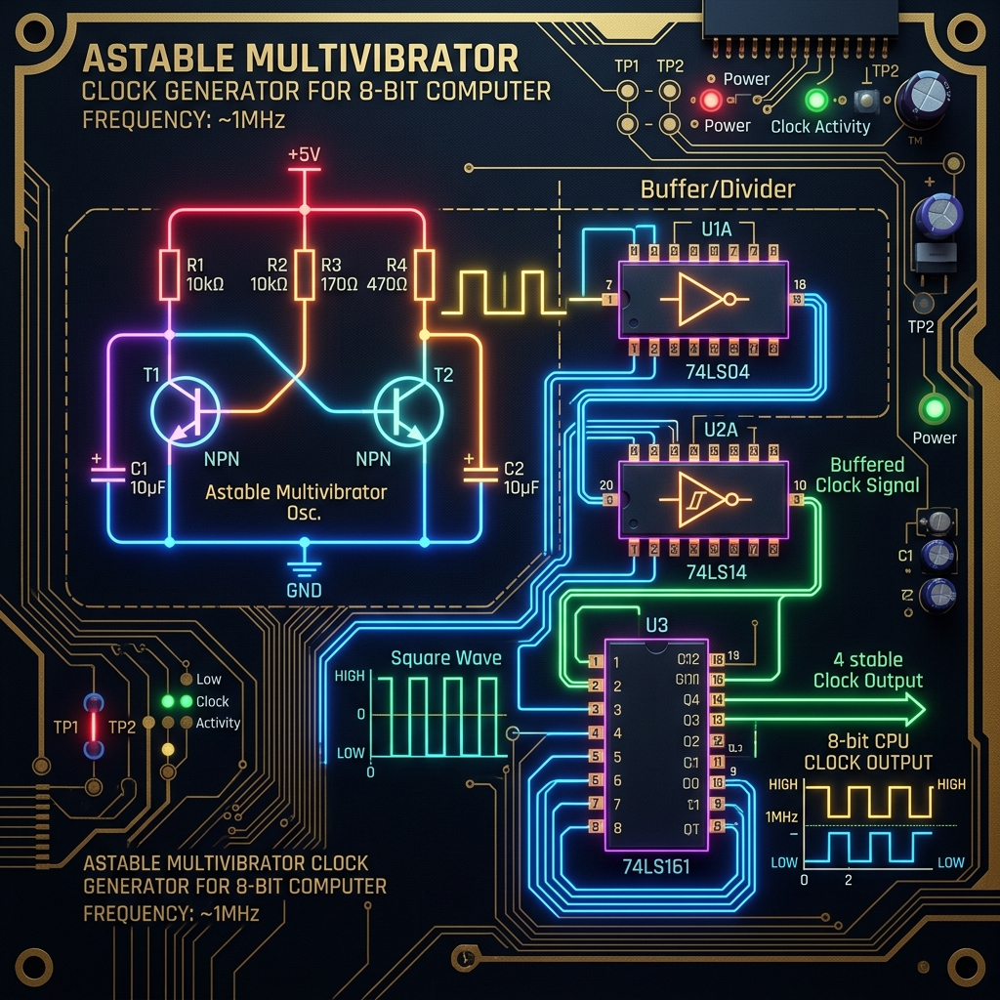

The Heartbeat of the Machine
In the vast, silent architecture of any computer system, nothing happens without a pulse. This pulse is known as the clock signal, and it is the fundamental driving force that gives life to a processor. Whether you are working with a modern multi-core, gigahertz-frequency powerhouse or meticulously assembling an 8-bit breadboard computer from fundamental logic gates, the principle remains entirely the same. The clock acts as the orchestrator, ensuring that every flip-flop, every register, and every bus transfer occurs in perfect, rhythmic synchronization.
Building an 8-bit computer from scratch—using basic NAND, NOR, and NOT gates—demands a deep understanding of not just how a clock ticks, but why it must tick at precise intervals to synchronize the most crucial sequence in computing: the Instruction Cycle. Welcome to Part 1 of our "Building an 8-bit Computer from Scratch" series. In this comprehensive guide, we will explore the physics and logic behind clock generation, dive deeply into the Fetch-Decode-Execute cycle, and finally, build a working astable multivibrator clock inside the SQGATE simulator.

Why Does a Computer Need a Clock?
Digital circuits are fundamentally composed of two distinct paradigms: combinational logic and sequential logic. Combinational logic—such as an Arithmetic Logic Unit (ALU), a multiplexer, or an adder—processes inputs immediately. As soon as the voltage levels at the input pins stabilize, the output pins reflect the result, minus a tiny propagation delay caused by the physical limitations of the silicon or transistors. However, a computer cannot function on combinational logic alone. It needs memory, state, and the ability to move data systematically over time.
Sequential logic introduces memory through latches and flip-flops, allowing the computer to "remember" states. However, if data flows unrestricted through sequential circuits, the system descends into chaos. A race condition occurs where fast-propagating signals overwrite slow-propagating signals before they have been fully processed. The clock signal—a continuous, alternating square wave of high (1) and low (0) voltages—solves this by acting as a strict metronome.
Components in a synchronous digital system only update their states on a specific edge of the clock signal, usually the rising edge (when the voltage transitions from 0 to 1). This guarantees that all combinational logic has had enough time to settle and produce valid, stable outputs before those outputs are latched into the next register. Without the clock, an 8-bit computer would simply act as a chaotic, unpredictable feedback loop where voltages fluctuate wildly.
Furthermore, the distinction between level-triggered and edge-triggered devices is paramount. Level-triggered latches are transparent as long as the clock is high. This can lead to undesirable feedback loops if a register feeds into itself through an ALU. Edge-triggered flip-flops, however, only capture the input state at the exact infinitesimally small moment the clock transitions, isolating the input from the output and allowing robust register-to-register transfers.
The Physics of Propagation Delay and Clock Skew
Before we build a clock, we must understand its limitations. A clock cannot run infinitely fast. The maximum frequency of a CPU is dictated by its critical path—the longest path an electrical signal must travel through combinational logic between two registers. If the clock ticks before the signal completes its journey through the critical path, the receiving register will capture garbage data, resulting in a system crash or logic error.
In our 8-bit computer design, the critical path typically resides in the ALU during an addition operation, where the carry bit must ripple through 8 consecutive full adders. The clock period must be strictly greater than this ripple delay. Furthermore, clock skew must be managed. If the clock signal wire is longer for Register A than Register B, Register B might update slightly before Register A, violating setup and hold times. In breadboard computers, ensuring uniform wire lengths for the clock distribution network is a subtle but critical engineering requirement.
Generating the Pulse: Astable Multivibrators and Crystal Oscillators
To generate this vital square wave, we need a circuit that oscillates between two states without external triggering. This type of circuit is known as an astable multivibrator. While hardware engineers often use a 555 timer IC coupled with resistors and capacitors to build a robust clock for low-frequency breadboard projects, we can understand the fundamental logic by constructing a ring oscillator using an odd number of NOT gates (inverters).
Imagine a single NOT gate. Its output is connected back to its input. If the input is 0, the output becomes 1. But because the output feeds back to the input, the input immediately becomes 1, which forces the output to 0, creating an infinite loop. In an ideal mathematical model, this would oscillate infinitely fast. In the physical world, every gate has a tiny propagation delay. By chaining three, five, or more NOT gates in a ring, we amplify this delay, creating a measurable, oscillating wave.
Let's examine the mechanics of a 3-gate ring oscillator. Initially, assume the input to Gate 1 is LOW (0). Gate 1 outputs HIGH (1) to Gate 2. Gate 2 outputs LOW (0) to Gate 3. Gate 3 outputs HIGH (1), which is fed back to the input of Gate 1. Now, the input to Gate 1 is HIGH, which means its output will flip to LOW, propagating through the chain. The frequency of this oscillation is determined by the formula: f = 1 / (2 * n * tp), where n is the number of gates and tp is the propagation delay per gate.
In high-performance computers, ring oscillators are far too sensitive to temperature and voltage variations. Instead, they use piezoelectric quartz crystals. When a voltage is applied to a quartz crystal, it physically deforms and resonates at a highly specific, ultrastable frequency. This mechanical resonance is converted back into an electrical square wave, providing the gigahertz precision required by modern architectures. For our 8-bit educational computer, however, an RC circuit or a 555 timer is more than adequate.
The Instruction Cycle: Fetch, Decode, Execute
With a reliable clock pulsing through the system, we can begin to coordinate the processor's main purpose: executing programs. A CPU operates in a continuous, unyielding loop known as the Instruction Cycle. Every tick of the clock advances the processor through a micro-operation, culminating in the execution of an instruction stored in memory. The cycle is universally divided into three distinct phases: Fetch, Decode, and Execute.
1. The Fetch Phase
The Fetch phase is responsible for retrieving the next instruction from the computer's Random Access Memory (RAM). It involves a delicate dance between several crucial registers: the Program Counter (PC), the Memory Address Register (MAR), and the Instruction Register (IR). This phase is identical for every single instruction the CPU executes.
First, the processor must know where to look in memory. This address is strictly maintained in the Program Counter. On the first clock cycle (T0) of the Fetch phase, the control unit asserts a signal (PC_OUT) that places the contents of the PC onto the main data bus. Simultaneously, it asserts a "load" signal (MAR_IN) on the MAR. As the clock ticks (the rising edge), the address is latched securely into the MAR.
With the MAR now pointing to the correct memory location, the RAM chip is activated. On the next cycle (T1), the control unit asserts the RAM read signal (RAM_OUT), dumping the data stored at that address onto the bus. Concurrently, it asserts the "load" signal for the Instruction Register (IR_IN). On the clock's edge, the instruction code (the opcode) is latched into the IR. Finally (T2), the Program Counter is commanded to increment by 1 (CE - Count Enable), preparing it to point to the next logical byte in memory. The Fetch phase is complete.
2. The Decode Phase
Once the instruction safely resides in the Instruction Register, the processor must understand what it means. This is the Decode phase. The IR's output is fed directly into the Control Unit—a massive combinational logic circuit (or an EEPROM array in microcoded systems) acting as the absolute brain of the CPU.
The control unit interprets the opcode (e.g., 0001 might mean ADD, 0010 might mean SUBTRACT). It acts as a massive decoder, illuminating specific control lines based on the current opcode and the current micro-instruction step counter (a modulo-8 counter tracking T0 through T7). For example, if the instruction is LDA (Load Accumulator), the control unit prepares to open the RAM output onto the bus and enable the Accumulator's load pin. The decode phase itself doesn't typically take up a dedicated clock cycle for movement; it merely sets the combinational stage, activating the exact control wires needed for the final execute phase as soon as the IR is stable.
3. The Execute Phase
The Execute phase is where the actual computation or data movement occurs. The number of clock cycles required for execution varies wildly depending on the instruction complexity. A simple NOP (No Operation) might take zero execution cycles, simply resetting the step counter immediately to begin a new Fetch phase. A complex instruction like an unconditional jump (JMP) might take a single cycle: placing the operand address onto the bus and latching it directly into the Program Counter.
Let's rigorously break down the execution of an ADD instruction. Assuming the architecture uses an accumulator and the operand is a memory address pointing to the value to be added, the execute phase micro-operations might look like this:
- T3: The operand address (the lower 4 bits of the IR) is placed on the bus (IR_OUT) and latched into the Memory Address Register (MAR_IN).
- T4: The RAM outputs the target value onto the bus (RAM_OUT). This value is latched into a secondary data register (often called the B-Register) connected to the right side of the ALU (B_IN).
- T5: The ALU constantly performs combinational addition between the Accumulator (A-Register) and the B-Register. The control unit asserts ALU_OUT to place the result on the bus, and asserts A_IN to latch it back into the Accumulator. The flags register is concurrently updated (e.g., Carry flag, Zero flag) based on the ALU status lines.
After the final execute micro-operation, the control unit's step counter is asynchronously reset to T0, seamlessly initiating the next Fetch phase. This cycle repeats thousands or millions of times per second, strictly governed by the relentless astable multivibrator clock.
Managing Edge Cases: Halting, Branching, and Wait States
In our 8-bit computer architecture, we must account for edge cases in clock generation and cycle management. What happens when the processor executes a HLT (Halt) instruction? The control unit must physically decouple the clock signal from the rest of the processor. This is typically achieved by passing the main clock output through an AND gate alongside a "Run" control line. When HLT is decoded, the "Run" line is pulled LOW by a dedicated flip-flop, forcing the AND gate to output a continuous 0 regardless of the clock's oscillation. This freezes the processor state entirely in place.
Branching instructions (JC - Jump if Carry, JZ - Jump if Zero) introduce conditional logic into the cycle. The control unit looks at the opcode and the output of the Flags Register simultaneously. If the condition is met, the PC is overwritten with the operand address. If not, the micro-step counter is simply reset, effectively skipping the execution phase and falling through to the next sequential instruction.
Furthermore, for debugging a computer built from scratch, a "Single-Step" mode is invaluable. This involves a hardware debounced switch that allows the user to manually pulse the clock line. Debouncing is critical here: a raw mechanical switch physically bounces on a microscopic level, causing multiple rapid high/low transitions that would execute several micro-operations by accident in milliseconds. A debouncing circuit, often built using a stable SR Latch or a Schmitt trigger, ensures exactly one clean, monotonic square pulse is generated per button press.
Building a Clock Circuit in SQGATE
To truly grasp these concepts, there's nothing better than hands-on experimentation. Using the SQGATE simulator, we can build a rudimentary clock based on a ring oscillator. We will use a series of NOT gates with a dedicated delay component to artificially slow down the oscillation to human-readable speeds, allowing you to watch the voltages propagate.
Below is a JSON snippet representing a simple astable clock circuit in the SQGATE environment. You can copy this code and import it directly into the simulator to watch the logic levels propagate in real-time, verifying the concepts of inversion loops and propagation delay.
{
"version": "1.0",
"name": "Astable_Clock",
"components": [
{
"id": "not1",
"type": "not",
"x": 200,
"y": 150
},
{
"id": "not2",
"type": "not",
"x": 350,
"y": 150
},
{
"id": "not3",
"type": "not",
"x": 500,
"y": 150
},
{
"id": "delay1",
"type": "delay",
"delay_ms": 250,
"x": 350,
"y": 250
},
{
"id": "out1",
"type": "output",
"x": 650,
"y": 150
}
],
"wires": [
{ "from": "not1.out", "to": "not2.in" },
{ "from": "not2.out", "to": "not3.in" },
{ "from": "not3.out", "to": "out1.in" },
{ "from": "not3.out", "to": "delay1.in" },
{ "from": "delay1.out", "to": "not1.in" }
]
}When you run this circuit, you will observe the signal continuously oscillating from high to low. The delay component acts as the fundamental time constraint, mimicking the RC time constant or propagation delay inherent in physical hardware. In our full 8-bit computer build, this exact out1 signal will be buffered and routed to the CLK input pins of every D-type flip-flop, register, and counter in the entire system, synchronizing the entire machine.
The Road Ahead
Understanding clock generation and the instruction cycle is the foundational bedrock of computer engineering and architecture. We have seen how a simple oscillating voltage creates order out of chaos, directing traffic across data buses and coordinating the intricate dance of memory access and ALU operations. The Fetch-Decode-Execute cycle is the very definition of software execution—it is exactly how static opcodes residing in memory manifest as dynamic behaviors and computations.
In the next installment of our series, we will take this robust clock signal and apply it to our very first sequential logic structure: The Program Counter. We will explore how to build a synchronous binary counter from elementary JK flip-flops, how to enable it to jump to arbitrary addresses via parallel loading, and how it interfaces robustly with the main data bus. Stay tuned for Part 2!